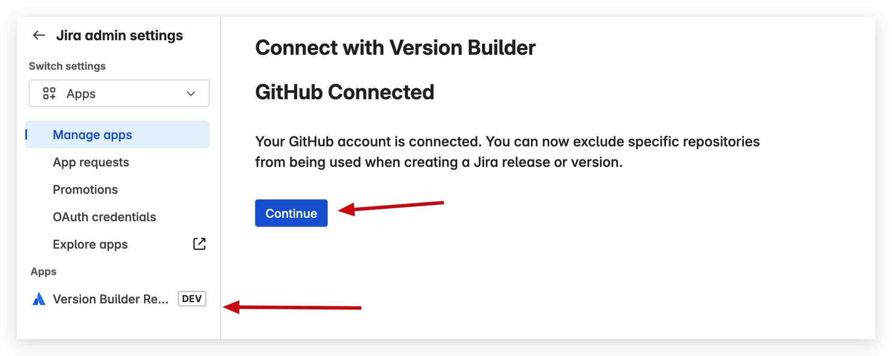

VersionBuilder
Docs
Automate Jira Version/Release Creation From Git
VersionBuilder scans your Git commit messages and links issues to Jira versions automatically. Focus on delivery, not admin.
Try it Free
How it works
Step 1: Connect Version Builder
Click the
Get Started
link to integrate Version Builder with your Jira and GitHub accounts.
Organization owners can enable access to all repositories across all projects for seamless automation.
Step 2: Set Repository Filters
Define global filters to include only relevant repositories for versioning.
Easily exclude library or utility repositories not tied to production releases.

Step 3: Create Versions from a project
Open any Jira board and select the Version Builder menu to start a new version.
Choose which repositories to scan for commit messages and issue links.
Step 4: Review and Track Versions
View the created or updated Jira version, including all linked issues and commits.
Easily track release progress and ensure all changes are accounted for.